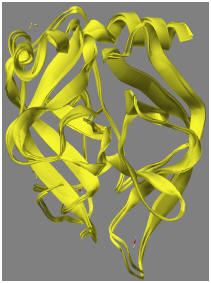

Chymotrypsin catalyzes the hydrolysis of a peptide bond where there is a large hydrophobic residue attached to the carboxyl of the -CO-NH-. A good starting system for modeling is 8GCH, this can be downloaded from the PDB. This system consists of chymotrypsin residues 1-11 and 16-245, a three-residue substrate GAW in the active site, four sulfate ions, and 346 water molecules. The entry 8GCH has the formula C1111S16N300O704, or 2131 atoms. As with most protein structures in the PDB, the positions of hydrogen atoms were not reported. Several files that will be referred to in the following discussion can be downloaded.
Constructing a starting model involves several steps and quite a lot of computer power, but the result is worth it. A good starting model is, as its name suggests, the starting point for a wide range of simulations. Great care should be used in building a starting model, to ensure that it is at a good energy minimum, that it is optimized, and that all the parts needed in subsequent operations are present. The example used here is for chymotrypsin, but the steps for other enzymes are similar. Don't rush the process - a lot of things can go wrong, and it is important to frequently check that everything is still on track.
Adding Hydrogen Atoms
Optimizing the positions of
Hydrogen Atoms
Solvation
Use of SETUP
Ionizing known ionized sites
Testing other
sites for Potential Ionization
Editing the Substrate
Adding Hydrogen Atoms: 8GCH was copied to form a new file 8GCH_from_PDB.mop. This file was not edited, its contents were exactly the same as 8GCH.pdb. 8GCH_from_PDB.mop was then run using MOPAC, this resulted in four new files being created:
8GCH_from_PDB.log - A list of
mainly uninteresting features found after hydrogenation.
8GCH_from_PDB.out - A file showing what MOPAC read in, the working and the output of the job,
again normally not interesting.
8GCH_from_PDB.arc - A data set in MOPAC format, suitable for
use in making a new data set.
8GCH_from_PDB.pdb - A file
similar to 8GCH_from_PDB.arc, but in PDB format.
Hydrogenation adds 2444 hydrogen atoms, to give C1111H2444S16N300O704, or 4575 atoms.
Optimizing the positions of Hydrogen Atoms: The starting point can be either 8GCH_from_PDB.arc or 8GCH_from_PDB.pdb. Starting with the PDB file is easier unless it is essential to refer to specific atoms.
If 8GCH_from_PDB.arc is used, then the file is edited so that the keyword becomes: "PDBOUT START_RES=(1E 16F 150G 250C 298F-300 297G-299 315E) MOZYME GNORM=10 PL NOOPT OPT-H" and the resulting file saved as 8GCH_opt-H.mop.
If 8GCH_from_PDB.pdb is used, then the file is edited to add three lines. The first line is "PDBOUT MOZYME GNORM=10 PL NOOPT OPT-H" The second and third lines can be blank or they can hold descriptive test. The resulting file saved as 8GCH_opt-H.mop.
This file is then run. Keyword "PL" is useful in large systems like the ones being used here. A few seconds after the job starts, the output file will start to be written. If a tail is put on the output file, to display the end of the file as it's being written, then the PL keyword will cause the iterating heat of formation to be printed. This will typically be very large and positive, then after several iterations it will become large and negative. If it stays positive, kill the job and look for a fault in the data set. Optimizing the positions of the hydrogen atoms will take about 100 cycles, maybe 50, maybe 200, and will typically take several hours, so an overnight run is probably best. This job results in two new files:
8GCH_opt-H.arc -
The usual archive file. This is interesting and will be useful in subsequent
steps
8GCH_opt-H.out -
The usual output file.
8GCH_opt-H.pdb - A
data set in PDB format, containing the original geometry of the heavy atoms and
the optimized geometry of the hydrogen atoms.
Solvation: In general, solvation should always be used. It was not used in adding hydrogen atoms or in optimizing their positions, because the system is still too crude to justify using solvation. Solvation could have been used, but the only result would be to use extra CPU time, it would not improve the results significantly. For all subsequent work, however, solvation is essential. To add solvation, use EPS=78.4.
Use of SETUP: A very common source of user-error involves faulty or missing keywords. To reduce the probability of errors of this type, use SETUP to define keywords that should be common to all calculations in a series. For this exercise, create a file "Chymotrypsin.txt" in the folder where the jobs are being run, and edit the file to insert one line: "EPS=78.4 MOZYME GNORM=10 CHARGE=-1 PDBOUT" Save the file. In each data-set, add the keyword "SETUP=Chymotrypsin.txt" and delete the keywords EPS=78.4, MOZYME, GNORM=10 CHARGE=-1, if present. If, at some future date, a different gradient criterion, e.g., 5, needs to be used, either edit Chymotrypsin.txt to replace GNORM=10 with GNORM=5, or add GNORM=5 to the keyword line. If the file Chymotrypsin needs to be in a different folder, then specify the exact path, e.g., "SETUP='C:/my files/Chymotrypsin.txt'"
File names: It is very important that, when working with large systems, files are given names that indicate what they are. For small systems such as toluene, simple names, e.g., Toluene.mop, can be used, but when small changes are made in large systems it is very easy to get confused unless a systematic method is used for naming files. In the following discussion files are named as follows:
The first four letters are 8GCH. This indicates
that the system is based on the 8GCH structure and no heavy atoms have been added or
deleted.
If "_make" is present, then the data set contains keyword SITE.
Each ionized site is then listed, using chain letters and residue numbers.
Ionizing known ionized sites: Chymotrypsin has three known ionization sites: Ile16 and Asp194, these form a salt bridge, and Asp102, part of the catalytic triad. Examination of the PDB file shows that these residues are in chains F, G, and F, respectively, Keyword SITE can be used for ionizing these residues. SITE uses residue chains letters and numbers to identify ionizable sites. To ionize these sites, edit 8GCH_opt-H.pdb to add the three lines:
Line 1: SETUP=chymotrypsin.txt site=(F16(+),G194(-),F102(-))
Line 2:
PDB Chymotrypsin, ionizing the residues 16, 102, and 194
Line 3:
then save the resulting file as 8GCH_make_F16(+)_G194(-)_F102(-).mop and run it. Because SITE was used, the job will stop before any SCF calculation is attempted. The resulting structure now has 2443 hydrogen atoms, and formula C1111H2443S16N300O704, or 4574 atoms; this will be the number of atoms used in all subsequent operations. Only one important file is generated:
8GCH_make_F16(+)_G194(-)_F102(-).pdb
Edit this file to add three lines:
Line 1: SETUP=chymotrypsin.txt
Line 2:
PDB Chymotrypsin, ionizing the residues 16, 102, and 194
Line 3:
Save the resulting file as 8GCH_F16(+)_G194(-)_F102(-).mop
Run 8GCH_F16(+)_G194(-)_F102(-).mop. This will take a long time to run, possibly several days. It will probably need to be restarted two or three times. If there is a lot of computer power available, the jobs in the next step can also be started at the same time as 8GCH_F16(+)_G194(-)_F102(-).mop If computer power is limited, allow 8GCH_F16(+)_G194(-)_F102(-).mop to run to completion, then build and run the jobs in the next step.
When the run is completed, two important files are produced: 8GCH_F16(+)_G194(-)_F102(-).pdb and 8GCH_F16(+)_G194(-)_F102(-).arc. The arc file shown that the ΔHf of the unconstrained optimized structure is -47835 kcal/mol. This is the first ΔHf that is meaningful - all previous heats of formation were on un-physical (not solvated or not optimized) structures.
Testing other sites for Potential Ionization: Whether specific sites are ionized or not can be investigated. Site F102 is the Asp of the catalytic triad, and is certainly ionized under all reasonable conditions. But what about other sites? Provided the total charge is unchanged various sites can be tested to see if they raise or lower the heat of formation. This involves forming or destroying salt bridges. If they lower it, the change is beneficial and the modification should be made, and vice versa. A reasonable assumption is that the state of ionization of one site would not affect that of another site significantly. Put another way, each potential salt bridge can be investigated without regard for any other ionization changes in the system.
Salt bridge F16 - G194: This involves Ile16(+) and Asp194(-). In the previous step, the assumption was made that this salt bridge exists in chymotrypsin, but what if it should not exist? The files 8GCH_F102(-).* represent chymotrypsin with only Asp102 ionized. From the optimized structure, 8GCH_F102(-).arc, the ΔHf is -47803 kcal/mol. This is 31 kcal/mol higher than when the salt bridge exists, therefore the conclusion can be made that the salt bridge Ile16(+) - Asp194(-) should exist, and that the strength of the salt bridge is ~31 kcal/mol.
Salt bridge E11 - F20: This involves Ser16(+) forming a salt-bridge with Glu194(-). Files: 8GCH_E11(+)_F20(-)_F102(-).* The ΔHf is -47800 kcal/mol, that is more positive than 8GCH_F102(-), therefore this salt bridge is unlikely to exist.
Salt bridge HSO4 - G154: This involves an ionic interaction between HSO4(-) and Arg154(+). Files: 8GCH_F16(+)_G194(-)_F102(-)_G154(+)_HSO4(-).* This system gave a ΔHf of -47855, 20 kcal/mol more negative than 8GCH_F16(+)_G194(-)_F102(-), therefore this salt bridge should exist.
Salt bridge F36 -F63: This involves Lys36(+) and Ser63(-). At physiological pH, 7.3 - 7.4, lysine's side chain (pKa: 10.5) is normally ionized. To avoid changing the number of atoms, 4574, in the system, for this run the nearby serine is also ionized. After geometry optimization, the ΔHf was -47857 kcal/mol, which is 22 kcal/mol more negative than 8GCH_F16(+)_G194(-)_F102(-), therefore it seems that this salt bridge should exist. However, examination of Ser63 shows that it is neutral! Near to Ser63 is a structure [H3O2]-, this is strongly hydrogen bonded to the serine and to nearly water molecules. The interpretation is obvious: a solvated hydroxyl ion and a serine residue is more stable than a water molecule in solution and a serine anion residue. A lack of chemical knowledge can be disastrous!
Comparison of PDB X-ray structure and the PM7 structure: At this point, it is interesting to compare the PM7 structure with the original X-ray structure from the PDB. If a comparison is made of the geometry of the X-ray structure after adding hydrogen atoms and ionizing Asp102 with the fully optimized structure from 8GCH_F102(-), the RMS difference is 1.11 Ångstroms. If only the backbone is compared, the RMS difference drops to 0.65 Ångstroms. The difference is due mainly to motion of the water molecules. When the backbone structures of the original and optimized geometries are superimposed, the result is as shown in the adjacent figure. Another measure of difference is from the energy change in going from the hydrogenated X-ray structure (-43780 kcal/mol) to the optimized PM7 structure (-47803 kcal/mol). This difference, 4,023 kcal/mol, is obviously a large amount, and is due to errors in the original X-ray structure and errors in the computational model. A measure of the error in the original X-ray structure can be obtained by performing a constrained optimization, where the optimized structure is biased towards the original X-ray structure. This is shown in 8GCH_Geo_ref.*.
Editing the Substrate: The
substrate in 8GCH consists of the tripeptide Gly250-Ala251-Trp252. In the
PDB file, this system is described as "GAMMA-CHYMOTRYPSIN IS A COMPLEX OF
ALPHA-CHYMOTRYPSIN WITH ITS OWN
TITLE 2 AUTOLYSIS PRODUCTS," so the substrate
is a short section of chymotrypsin itself. Inspection of the chymotrypsin
residue sequence shows the sequence Gly205-Ala206-Trp207-Thr208 occurs in chain
G. From this, we can infer that the peptide bond that was hydrolyzed to
give the substrate was Thr, and that, prior to hydrolysis, the sequence would
have been Gly250-Ala251-Trp252-Thr253. To regenerate the peptide, one of
the oxygen atoms on the -COO group on Trp252 would need to be replaced by a NH
of Thr253. Careful inspection of the environment of Trp252 shows one of
the oxygen atoms, atom number 1784, is ideally positioned to hydrogen bond to
hydrogen atoms on Gly193 and Ser195, two of the residues in the oxyanion hole.
The other oxygen atom, atom number 1765, is therefore the atom that would need
to be replaced by the nitrogen of Thr253.
Editing the tripeptide in situ to replace the oxygen atom by a threonine residue requires a good GUI. The Thr253 has a hydroxyl group that could potentially hydrogen bond to the carbonyl oxygen of Trp252. If the hydroxyl group is positioned so that this hydrogen bond could form, and the geometry re-optimized, then the minimum energy structure is generated, and the carbonyl oxygen of Trp252 now forms three hydrogen bonds in the oxyanion hole.